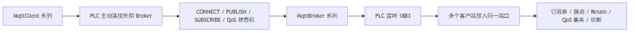
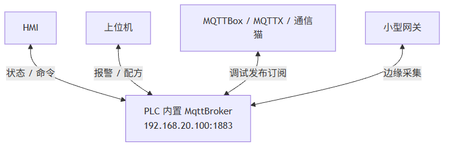
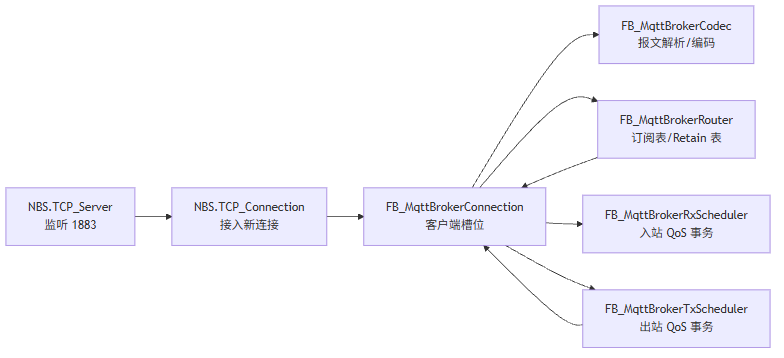

这一篇是 Broker 系列的开场。前一个系列我们把 PLC 作为 MQTT Client 怎么连接、发布、订阅、ACK、重发讲完了；这一篇开始反过来问：如果现场只有几台 HMI、上位机、调试工具和 PLC，真的每次都必须额外部署 EMQX / Mosquitto 吗？
适合谁收藏
- 正在做 CodeSys / PLC / MQTT 项目的人
- 想把 PLC 从 MQTT Client 扩展成轻量 Broker 的人
- 正在排查 MQTTBox、通信猫、MQTTX 连接异常的人
- 想学习 Broker 侧状态机、路由和 QoS 事务的人
前面我们已经把 PLC 做 MQTT Client 这件事拆开讲完了。
但现场很快会冒出第二个问题：
如果只是几台 HMI、一个上位机、一个调试工具和一台 PLC 之间互发消息，真的必须再摆一台外部 Broker 吗？
先给结论：
可以不摆。 但前提是我们非常清楚：PLC 里的 Broker 不是 EMQX 的复刻版，而是一个固定资源、轻量、可诊断、面向小规模工业现场的 MQTT 消息分发器。
这一篇只解决 4 个问题：
- PLC 侧 Broker 的定位到底是什么。
- 它和 EMQX / Mosquitto 的边界在哪里。
- 为什么 Broker 比 Client 难的地方不是 PUBLISH，而是多客户端调度。
- 这个系列后面会把哪些硬东西讲透。
一、从 Client 到 Broker，视角完全反过来了
Client 系列回答的是：
PLC 怎么主动连接一个 Broker。
Broker 系列回答的是：
PLC 能不能自己承担一个小型 Broker 的角色。
这不是把客户端代码反过来写一遍。Broker 的复杂度来自“别人都来找你”。

Client 侧最核心的是“一条连接怎么跑通协议链”。 Broker 侧最核心的是“多条连接怎么被稳定调度”。
这个差异非常关键。
二、PLC Broker 不是什么
先把边界说清楚，后面才不会写歪。
MqttBroker 不是：
| 不是什么 | 为什么不能这么定位 |
|---|---|
| PLC 版 EMQX | PLC 扫描周期、内存模型、任务调度和通用服务器完全不同 |
| 海量连接服务器 | 默认目标是 5~8 个客户端，不是几千上万连接 |
| 完整 MQTT 5.0 企业 Broker | 当前只做 MQTT 5.0 基础兼容，不实现完整属性系统 |
| 云平台消息中间件 | 不做集群、持久化数据库、WebSocket、TLS、规则引擎 |
| 把所有逻辑塞进一个 FB 的玩具 | 必须拆连接槽位、Codec、Router、QoS Scheduler、诊断 |
正确定位是：
面向小型工业现场的 PLC 内置轻量 MQTT Broker。
这句话里每个词都有意义：
| 关键词 | 含义 |
|---|---|
| PLC 内置 | Broker 运行在 PLC 工程里，不依赖外部服务器 |
| 轻量 | 固定资源、固定数组、无动态内存 |
| 工业现场 | 关注稳定、诊断、可维护，不追求互联网级吞吐 |
| MQTT Broker | 支持客户端连接、订阅、发布、路由、QoS、Retain、Will、KeepAlive |
三、为什么现场会需要这个东西
典型现场并不总是云边端一整套架构。
很多时候只是这样：

这类现场的诉求很朴素：
- 不想为了几条消息再部署一台工控机。
- 不想让调试依赖外部服务是否启动。
- 希望 PLC 自己就能做本地消息分发。
- 希望出了问题能在 PLC 在线变量里直接看到原因。
这就是 PLC 侧 Broker 的价值。
四、架构上不能偷懒
一个能用的 Broker 至少要拆成这几层：

这里最容易犯的错误是：以为会回 CONNACK，会转发 PUBLISH，Broker 就差不多了。
不是。
真正麻烦的是：
| 模块 | 真实难点 |
|---|---|
| TCP 接入 | 多客户端都连同一个端口，接入后要分配独立槽位 |
| 连接槽位 | 每个客户端都要有独立 TCP 句柄、ClientID、KeepAlive、收发队列 |
| Codec | MQTT 是 TCP 流协议，半包、粘包、多帧同读都必须处理 |
| Router | Topic Filter 不是字符串相等，+、# 都要匹配 |
| QoS | PacketId 是连接作用域，转发时不能直接沿用发布者的 PacketId |
| Retain | 勾选 Retain 后新订阅者要立即收到最后值 |
| Will | 正常 DISCONNECT 和异常断线必须分开 |
| 性能 | 高频小消息不能一帧一次 TCP_Write 慢慢挤 |
| 诊断 | 现场不能只看客户端日志，PLC 里要有快照和历史 |
五、当前 MqttBroker 已经具备的能力
当前 MqttBroker 面向 CodeSys V3.5，核心能力如下：
| 能力 | 状态 | 说明 |
|---|---|---|
| MQTT 3.1.1 | 支持 | 主链路版本 |
| MQTT 3.1 | 基础连接兼容 | 支持 MQIsdp + level 3 |
| MQTT 5.0 | 基础兼容 | 跳过属性长度，返回零属性响应 |
| QoS0 / QoS1 / QoS2 | 支持 | 主链路闭环 |
| 多客户端同端口 | 支持 | 多客户端同时连接 1883 |
| Retain | 支持 | 写入、覆盖、清除、新订阅补发 |
| Will | 支持 | 异常断线触发 |
| KeepAlive | 支持 | 1.5 倍宽限清理 |
| 基础认证 | 支持 | 固定用户表 |
| Topic ACL | 支持 | 轻量前缀规则 |
| 诊断快照 | 支持 | 每连接在线观察 |
| 性能优化 | 支持 | 批量编码 + TCP 粘包写出 |
边界也要说清楚：
| 不支持 | 当前原因 |
|---|---|
| TLS | 当前版本只做 TCP 明文 MQTT |
| WebSocket | PLC 侧轻量 Broker 暂不引入 |
| 集群 | 不符合当前小规模工业定位 |
| 数据库持久化 | 当前 Retain / 会话状态为 PLC 内存模型 |
| 完整 MQTT 5.0 属性系统 | 当前只做基础兼容接入 |
六、ST 代码入口先认准这三个对象
本系列后面会不断回到源码。第一篇先认入口。
| 对象 | 作用 |
|---|---|
PRG_MqttBrokerDemo | 最小运行示例，用户工程从这里调用 Broker |
FB_MqttBroker | Broker 主功能块，负责监听、接入、路由、调度、诊断 |
GVL_MqttBroker | 全局容量和调度参数，比如端口、槽位数、队列长度、批量写帧数 |
最小运行形态大概是这样：
PROGRAM PRG_MqttBrokerDemo
VAR
fbBroker : FB_MqttBroker; // MQTT Broker 主功能块实例
bEnable : BOOL := TRUE; // 示例总使能
END_VAR
fbBroker(
bEnable := bEnable,
sBindIP := '0.0.0.0',
uiPort := GVL_MqttBroker.cnDefaultPort);如果 PLC 网口是 192.168.20.100，也可以绑定指定网卡：
fbBroker(
bEnable := TRUE,
sBindIP := '192.168.20.100',
uiPort := 1883);现场调试时我更建议先用 0.0.0.0 验证监听，再逐步改成指定网卡。
模型边界与验证路径
这一篇的核心判断，不是“PLC 一定要当 Broker”，而是：
在小规模、本地化、可诊断优先的工业现场里，PLC 侧轻量 Broker 是一个合理选项。
结论分级如下：
| 结论 | 可信度 | 依据 | 边界 |
|---|---|---|---|
| PLC Broker 不等同于 EMQX / Mosquitto | high | 产品架构和 PLC 固定资源模型 | 不讨论通用服务器能力 |
| 多客户端本地消息分发适合轻量 Broker | medium | 工业现场常见小规模通信模型 | 客户端规模、消息频率和 PLC 任务周期要核验 |
| 当前系列应围绕槽位、状态机、路由和诊断展开 | high | Broker 源码结构和已测试功能 | 后续如果加入持久化或 TLS，结构需要再扩展 |
验证路径也很简单：
- 用两个客户端同时连接 PLC 的
1883。 - 观察
uiActiveSlotCount是否稳定为 2。 - 互相发布订阅同一主题。
- 再测试 Retain、QoS、KeepAlive 和断线恢复。
能跑通只是第一层。真正要看的是：连续运行、异常断开、客户端重连以后，状态还能不能保持一致。
七、这一篇你最该记住的 5 句话
- PLC Broker 不是 EMQX 复刻版，而是小型工业现场的本地消息分发器。
- Client 难在一条连接跑通，Broker 难在多条连接稳定调度。
- 多个客户端连同一个
1883端口是正常机制，不是端口冲突。 - Broker 的核心不是 PUBLISH，而是连接槽位、订阅表、QoS 事务、Retain 和诊断。
- PLC 侧 Broker 必须固定资源、预算化调度、可在线诊断。
下篇预告
下一篇讲最容易踩坑的一关：
写 MQTT Broker，第一关不是 PUBLISH，而是怎么让多个客户端稳稳连上同一个端口。
我们会把 TCP_Server、TCP_Connection、客户端槽位、xTcpAcceptActive 闪烁、uiAcceptFreeSlot 跳变这些真实现场问题拆开。
完整 ST 代码
下面这段是最小可运行入口，来自 PRG_MqttBrokerDemo.st。它说明这套 Broker 对用户侧不是“到处散落的一堆方法”，而是周期调用一个主 FB，把监听 IP 和端口交给 FB_MqttBroker 后，连接接入、报文解析、订阅路由和事务调度都由内部状态机完成。
/// =======================================================================
/// 名称 : PRG_MqttBrokerDemo
/// 功能 : MQTT Broker 最小运行示例
/// 说明 : 在 PLC 应用任务中周期调用本程序即可启动轻量 Broker。
/// 编程人员 : ControlRookie
/// 时间 : 2026-05-08
/// 版本 : V1.0
/// =======================================================================
PROGRAM PRG_MqttBrokerDemo
VAR
fbBroker : FB_MqttBroker; // MQTT Broker 主功能块实例，负责监听、接入、路由和事务调度
bEnable : BOOL := TRUE; // 示例总使能，TRUE 时启动 Broker，FALSE 时停机释放运行态
END_VAR
// === IMPLEMENTATION ===
fbBroker(
bEnable := bEnable,
sBindIP := '0.0.0.0',
uiPort := GVL_MqttBroker.cnDefaultPort);容量、端口、队列和超时策略统一收敛在 GVL_MqttBroker。这也是 PLC 侧写 Broker 时非常重要的一点：资源边界必须显式，不要把动态增长留给运行时“自由发挥”。
/// =======================================================================
/// 名称 : GVL_MqttBroker
/// 功能 : MQTT Broker 全局常量
/// 说明 : 所有容量、协议默认值和超时策略集中定义，便于 PLC 项目按资源统一裁剪。
/// 编程人员 : ControlRookie
/// 时间 : 2026-05-08
/// 版本 : V1.0
/// =======================================================================
{attribute 'qualified_only'}
VAR_GLOBAL CONSTANT
cnDefaultPort : UINT := 1883; // Broker 默认 MQTT TCP 监听端口号
cnMaxClientSlots : UINT := 8; // PLC 侧 Broker 同时允许保持的最大客户端槽位数量
cnMaxSubscriptions : UINT := 64; // 全局订阅表最大条目数，所有客户端共享
cnMaxRetainedMessages : UINT := 32; // Retain 保留消息表最大条目数
cnMaxRxInflight : UINT := 16; // 入站 QoS>0 事务表容量，为未来 QoS2 接收去重预留
cnMaxTxInflight : UINT := 32; // 出站 QoS>0 事务表容量，为 QoS1 重发和未来 QoS2 投递预留
cnMaxTopicLen : UINT := 256; // MQTT Topic Name / Topic Filter 最大长度[byte]
cnMaxClientIdLen : UINT := 128; // MQTT ClientID 最大缓存长度[byte]
cnMaxUsernameLen : UINT := 64; // MQTT 用户名最大缓存长度[byte]
cnMaxPasswordLen : UINT := 64; // MQTT 密码最大缓存长度[byte]
cnMaxPayloadLen : UINT := 1024; // 单条消息载荷最大缓存长度[byte]
cnRxBufferSize : UINT := 2048; // 单连接 TCP 接收缓冲区容量[byte]
cnTxBufferSize : UINT := 2048; // 单连接 TCP 发送缓冲区容量[byte]
cnMaxTopicItemsPerPacket : UINT := 8; // 单个 SUBSCRIBE / UNSUBSCRIBE 报文最多解析的主题条目数
cnMaxAuthUsers : UINT := 8; // 固定用户表最大条目数，用于轻量基础认证
cnMaxAclRules : UINT := 16; // 固定 Topic 权限表最大条目数，用于轻量 ACL
cnProtocolQueueSize : UINT := 8; // 单连接协议优先队列容量，PUBACK/SUBACK/PINGRESP 等优先使用
cnDeliveryQueueSize : UINT := 16; // 单连接普通投递队列容量，PUBLISH 业务消息使用
cnDeliveryQueueHighWater : UINT := 12; // 单连接普通投递队列高水位，超过后进入慢客户端保护
cnMaxTxFramesPerWrite : UINT := 8; // 单次 TCP_Write 最多合并写出的 MQTT 控制报文帧数量；现场实测常见为 1~2 帧，保留 8 作为上限但不主动堆大突发[帧]
cnMinTxBufferFree : UINT := 64; // 批量编码时保留的发送缓冲安全余量，避免最后一帧贴边写入[byte]
cnDiagHistorySize : UINT := 32; // 诊断环形历史最大条目数
cnDefaultKeepAlive : UINT := 60; // 客户端未声明时采用的默认 KeepAlive 周期[s]
END_VAR
评论区预留
这里先保留评论和回复结构，不接入第三方服务。后续统一决定登录、匿名、审核、反垃圾和静态站兼容策略。